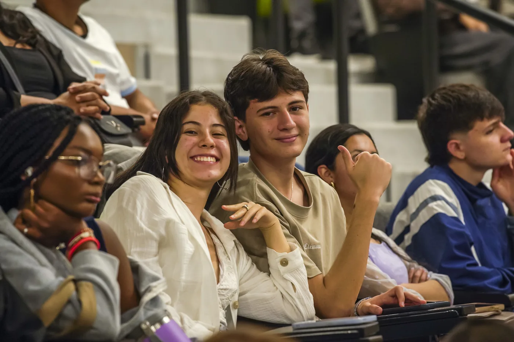
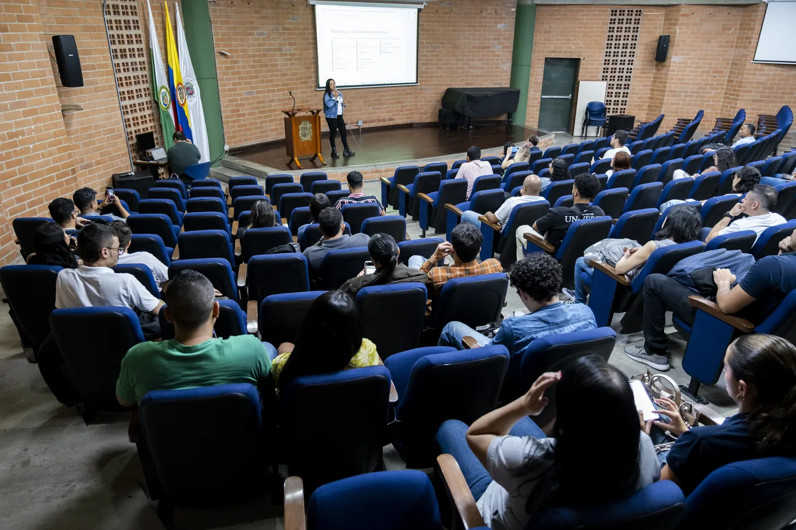

Accesos directos a los programas centrales de la Dirección Académica
Convocatorias, talleres y actividades de formación vigentes

Recepción de postulaciones para estudiantes de pregrado con excelencia formativa.

Espacios de diálogo para coordinadores y comités asesores de programa.
Canal institucional de consulta
Para evitar inconsistencias o fechas obsoletas, los calendarios de adición/cancelación y resoluciones corresponden a la División de Registro y Matrícula.
Consultar en Registro y Matrícula ↗Evaluación docente, autoevaluación e inicio de programación académica
Acceso al proceso semestral de valoración pedagógica del cuerpo docente por parte de la comunidad académica.
Estado de los procesos de autoevaluación y acreditación institucional de alta calidad de los programas curriculares.
Consultar Programas Acreditados ↗Guía procedimental por fases para el reporte y consolidación de la oferta de asignaturas por Facultades.
Ver Guía por Fases y Resoluciones ↗Canal oficial para radicación de solicitudes, inquietudes curriculares y orientación académica de la Sede Medellín.
Identidad institucional, funciones normativas y directorio del equipo de trabajo
La Dirección Académica de la Universidad Nacional de Colombia Sede Medellín orienta, acompaña y fortalece los procesos académicos que garantizan una formación integral, crítica y de calidad.
Contribuir al desarrollo de la formación integral de los estudiantes, mediante el acompañamiento, la orientación y la gestión académica de los programas curriculares de la Sede Medellín.
Ser un referente en la gestión académica de la Universidad, reconocida por su calidad, innovación pedagógica y compromiso con el bienestar formativo de la sociedad.
Nota técnica: Se omiten teléfonos privados y correos personales @unal individuales; se publican exclusivamente correos institucionales de proceso.
Acompañamiento académico, tutorías, movilidad e infografías de solicitudes
Instrucciones, requisitos de créditos e información del examen de estado ante el Icfes.
Descargar Guía Saber Pro (PDF) 📄Requisitos y formatos para cursar asignaturas en sedes Bogotá, Manizales, Palmira y de frontera.
Descargar Formato Movilidad (DOCX) 📥Grupos de Estudio Autónomo. Tutorías presenciales y virtuales en asignaturas de alto impacto.
Ver Horarios Actualizados GEA ↗Asignaturas de libre elección: Francés, Italiano, Portugués, Explora Mundo e Intensive English. (Nota: La ejecución formativa es del Centro de Idiomas).
Ir al Centro de Idiomas ↗Orientación visual del paso a paso que debe seguir cada estudiante para radicar y tramitar solicitudes curriculares.
Consulte los dos flujogramas oficiales aprobados por la Dirección Académica y Registro:
Herramientas operativas, formatos curriculares, convocatorias e innovación pedagógica
Herramientas técnicas, formatos y normativas dirigidas a coordinadores y comités asesores.
Descargar Formatos Curriculares 📥Guía para el trámite de microcurrículos y apertura/ajuste de materias en el catálogo SIA.
Plantilla de Microcurrículo (DOCX) 📥Metodologías de autoevaluación y ajuste curricular (término sustituto de Armonización).
Guías Metodológicas 📄Fomento a proyectos docentes e iniciativas pedagógicas (término sustituto de Laboratorio).
Convocatorias Docentes Activas ↗| Código / Trámite | Nombre del Documento | Dirigido A | Descarga |
|---|---|---|---|
| FOR-CURR-01 | Plantilla Estándar para Formulación de Microcurrículos | Docentes y Comités Curriculares | Descargar (.docx) 📥 |
| FOR-CURR-02 | Formato de Modificación o Cierre de Asignatura en SIA | Directores de Área Curricular | Descargar (.docx) 📥 |
| GUIA-CURR-03 | Manual Metodológico de Reflexión y Actualización de Planes | Coordinadores de Programa | Descargar (.pdf) 📄 |
Oportunidades de formación posgradual y movilidad docente con instituciones externas
Consulte los convenios vigentes suscritos por la Universidad Nacional de Colombia para la formación doctoral y pasantías de docentes y funcionarios:
| País | Institución / Universidad | Tipo de Formación | Requisitos Oficiales |
|---|---|---|---|
| España | Universidad Politécnica de Valencia | Doctorado y estancia docente | Ver Términos y Ficha (PDF) 📄 |
| Brasil | Universidade de São Paulo (USP) | Investigación posgradual compartida | Ver Términos y Ficha (PDF) 📄 |
| Alemania | DAAD / Universidades Asociadas | Becas para formación doctoral | Ver Términos y Ficha (PDF) 📄 |
| Francia | Red de Escuelas de Ingenieros (París) | Movilidad profesoral y posgrado | Ver Términos y Ficha (PDF) 📄 |
Conoce las oportunidades de estudio, cátedras abiertas y canales oficiales de la Sede
Conoce los requisitos, fechas de exámenes y oferta de programas de pregrado de la Universidad.
Ir al Portal de Admisiones ↗Espacios de formación ciudadana, debate y diálogo académico abiertos a la comunidad.
Consultar Programación ↗Oferta de cursos de lenguas extranjeras ofertados para público externo por el Centro de Idiomas.
Ver Centro de Idiomas ↗La Dirección Académica orienta, acompaña y fortalece los procesos académicos que garantizan una formación integral, crítica y de calidad en las cinco facultades de la Sede Medellín.
Contribuir al desarrollo de la formación integral de los estudiantes, mediante el acompañamiento pedagógico y la rigurosa administración curricular.
Ser un referente institucional en gestión académica reconocido por su excelencia, innovación y compromiso con el desarrollo social.
Nómina actualizada formalmente: Se incorpora a Priscila, se retira a Fiorela y M, y se unifican buzones de proceso (sin correos individuales ni extensiones privadas).
Cronogramas Icfes, guías descargables e instrucciones de registro.
Guía Saber Pro (PDF) 📄Formatos para cursar asignaturas en sedes andinas o de frontera.
Formato Movilidad (DOCX) 📥Electivas en idiomas. (La docencia es del Centro de Idiomas).
Centro de Idiomas ↗Descargue los flujogramas oficiales para trámites académicos en Pregrado y Posgrado:
Formatos y lineamientos para directores y comités curriculares.
Formatos Curriculares 📥Procedimiento para formulación y ajuste de microcurrículos.
Plantilla Editable (DOCX) 📥Metodologías de autoevaluación (término oficial sustituto).
Guías Técnicas 📄Cooperación con universidades externas para estudios de posgrado y movilidad docente:
| País | Institución | Alcance | Requisitos |
|---|---|---|---|
| España | Universidad Politécnica de Valencia | Doctorado docente | Términos (PDF) 📄 |
| Brasil | Universidade de São Paulo (USP) | Investigación compartida | Términos (PDF) 📄 |
| Alemania | DAAD / Universidades Asociadas | Formación doctoral | Términos (PDF) 📄 |
Proceso semestral de evaluación académica para estudiantes y docentes.
Reporte metodológico por fases (1, 2 y 3) para la oferta semestral.
Consultar Resoluciones y Fechas Oficiales en Registro ↗¿Tiene inquietudes sobre trámites académicos, movilidad o gestión curricular? Radique su caso en la ventanilla única oficial de la Sede:
Radicar en Punto de Contacto ↗